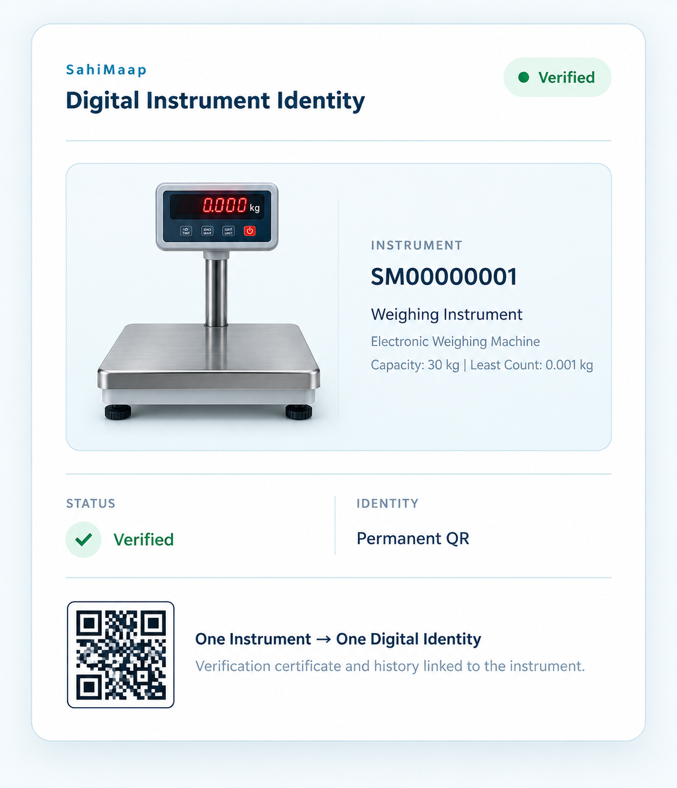

Making Legal Metrology Simple, Clear & Connected
SahiMaap is a digital platform designed to simplify the verification and certification of weighing and measuring instruments.
One connected platform for registration, verification, certification and compliance.

One Connected Platform for Legal Metrology Verification
SahiMaap is a digital Legal Metrology verification and compliance platform designed to simplify the verification of weighing and measuring instruments.
It brings instrument owners, Legal Metrology Officers (LMOs), GATCs, departments and consumers together through one connected system.
From instrument registration and application to scheduling, field verification, approval and digital certification, SahiMaap makes the entire process more organized and traceable.
Complete Verification Lifecycle
Registration → Application → Scheduling → Verification → Approval → Certification → Monitoring
Built for Transparent, Traceable Verification
SahiMaap connects digital identity, verification and compliance into one system.
Permanent QR Identity
Every instrument receives a permanent QR-based digital identity linked to its verification records.
Rule-Driven Verification
Verification can be guided through applicable rules and digitally defined tests.
Offline Field Support
Field data can be recorded in low or no-connectivity areas and synchronized later.
Validity Tracking
Verification validity and re-verification requirements can be tracked throughout the lifecycle.
A Simple Digital Verification Journey
Every stage of the verification process remains connected and traceable.
Connecting Everyone Involved
Instrument Owners
Register instruments, submit applications and access verification certificates.
LMOs & GATCs
Manage scheduling, field verification, observations and records.
Departments
Get better visibility into verification status, validity and activities.
Consumers
Access instrument verification information through QR-based verification.